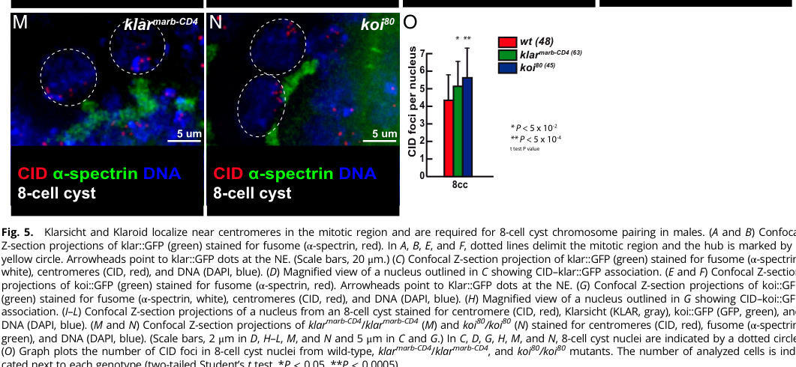

Klaroid (koi, CG44154) is the major Drosophila melanogaster SUN-domain protein of the nuclear envelope and the inner-nuclear-membrane partner of the KASH proteins Klarsicht (Klar) and Msp300 in LINC complexes. It is a large (965 aa) membrane protein with an N-terminal nucleoplasmic region, predicted transmembrane segments, a coiled-coil region and a C-terminal SUN domain in the perinuclear space, which retains the KASH domain of Klarsicht at the outer nuclear membrane. Koi is expressed ubiquitously, and its nuclear envelope localization depends on Lamin. In the developing eye, Koi-anchored Klarsicht couples nuclei to the microtubule organizing centre so that nuclei of differentiating photoreceptors and non-neuronal cells migrate apically; koi mutants phenocopy klar mutants (rough eyes, mispositioned R-cell and cone-cell nuclei) but are viable and fertile. In larval and embryonic muscle, Koi with Klar and Msp300 is required for even myonuclear spacing and anchoring, and its abundance is controlled by Ari-1/Parkin mono-ubiquitination and proteasomal turnover. In the germline, Koi and Klar form nuclear-envelope foci next to centromeres and transmit dynein-driven microtubule forces that rotate nuclei and move centromeres, promoting homolog pairing in the mitotic cycles preceding and at the onset of meiosis in both sexes. Koi has minor roles in positioning fat-body nuclei, where the Msp300-anchored perinuclear microtubule-organizing centre dominates.
| GO Term | Evidence | Action | Reason |
|---|---|---|---|
|
GO:0005635
nuclear envelope
|
IBA
GO_REF:0000033 |
ACCEPT |
Summary: Nuclear envelope (PAINT, SUN family node).
Reason: Sound phylogenetic inference; koi itself is among the experimental descendants of the node, which is expected. Koi is the major Drosophila SUN protein at the nuclear envelope.
Supporting Evidence:
PMID:32066907
Drosophila has two Nesprins: Klarsicht (Klar) and Msp300, and one major SUN protein Klaroid (Koi), all of which are localized to the nuclear envelope in fat body cells
PMID:29689197
Immunostaining revealed that Koi is ubiquitously expressed and localizes to the nuclear envelope
|
|
GO:0005635
nuclear envelope
|
IDA
PMID:29689197 Ari-1 Regulates Myonuclear Organization Together with Parkin... |
ACCEPT |
Summary: Nuclear envelope: Koi (GFP protein trap and immunostaining) is ubiquitous and localizes to the NE in larval muscle.
Reason: Directly shown and consistent with the fat-body data; the NE is the site of Koi's LINC function.
Supporting Evidence:
PMID:29689197
Immunostaining revealed that Koi is ubiquitously expressed and localizes to the nuclear envelope
PMID:32066907
Drosophila has two Nesprins: Klarsicht (Klar) and Msp300, and one major SUN protein Klaroid (Koi), all of which are localized to the nuclear envelope in fat body cells
|
|
GO:0005635
nuclear envelope
|
IEA
GO_REF:0000117 |
ACCEPT |
Summary: Nuclear envelope (ARBA).
Reason: Consistent with experimental data.
Supporting Evidence:
PMID:32066907
Drosophila has two Nesprins: Klarsicht (Klar) and Msp300, and one major SUN protein Klaroid (Koi), all of which are localized to the nuclear envelope in fat body cells
|
|
GO:0005815
microtubule organizing center
|
IEA
GO_REF:0000044 |
MARK AS OVER ANNOTATED |
Summary: Microtubule organizing center (UniProt SubCell mapping, derived from the fat-body perinuclear ncMTOC study).
Reason: In fat body cells the perinuclear ncMTOC is assembled on the cytoplasmic surface of the nucleus and anchored by the KASH protein Msp300, which recruits Patronin, Ninein and Msps. Koi is reported at the nuclear envelope, and koi nulls have only little-to-moderate effects on nuclear centricity. As an inner-nuclear-membrane SUN protein Koi is at most an indirect anchor of the ncMTOC through Msp300/Klar, not an MTOC component; the MTOC location over-states the evidence.
Supporting Evidence:
PMID:32066907
a perinuclear MTOC in Drosophila fat
body cells that is anchored by the Nesprin homologue Msp300 at the cytoplasmic
surface of the nucleus
PMID:32066907
Drosophila has two Nesprins: Klarsicht (Klar) and Msp300, and one major SUN protein Klaroid (Koi), all of which are localized to the nuclear envelope in fat body cells
PMID:32066907
Null alleles of klar or koi had little or moderate effect on nuclear centricity
|
|
GO:0007097
nuclear migration
|
IMP
PMID:18820457 Drosophila klaroid encodes a SUN domain protein required for... |
ACCEPT |
Summary: Nuclear migration: koi mutants, like klar mutants, fail apical nuclear migration in differentiating photoreceptors (rough eyes) and in non-neural eye cells.
Reason: Core process. Koi is the inner-nuclear-membrane SUN partner that tethers the KASH protein Klarsicht, which links the nucleus to the microtubule organizing centre/microtubule motors to move nuclei in the eye disc. Koi does part of the work as the force-bearing NE anchor, so the involved_in claim passes the participation test. Abstract-only in cache; the curator had the full text.
Supporting Evidence:
PMID:18820457
we find that klaroid and klarsicht are required for
nuclear migration in differentiating neurons and in non-neural cells
PMID:18820457
klaroid loss-of-function mutants are
indistinguishable phenotypically from klarsicht mutants
PMID:18820457
Here, we identify Drosophila Klaroid, a SUN
protein that tethers Klarsicht
|
|
GO:0016020
membrane
|
IEA
GO_REF:0000044 |
ACCEPT |
Summary: Membrane (UniProt SubCell mapping from predicted transmembrane segments).
Reason: Correct but very general; Koi is an integral nuclear envelope membrane protein.
Supporting Evidence:
PMID:32066907
Drosophila has two Nesprins: Klarsicht (Klar) and Msp300, and one major SUN protein Klaroid (Koi), all of which are localized to the nuclear envelope in fat body cells
|
|
GO:0034399
nuclear periphery
|
IDA
PMID:20702563 The role of Drosophila Lamin C in muscle function and gene e... |
ACCEPT |
Summary: Nuclear periphery, from a Lamin C muscle study.
Reason: Abstract-only in cache and the abstract does not mention Koi; the location is nonetheless consistent with Koi's established NE localization (a nuclear-envelope protein is at the nuclear periphery), so the curator's assertion is accepted.
Supporting Evidence:
PMID:29689197
Immunostaining revealed that Koi is ubiquitously expressed and localizes to the nuclear envelope
|
|
GO:0034993
meiotic nuclear membrane microtubule tethering complex
|
IBA
GO_REF:0000033 |
KEEP AS NON CORE |
Summary: Meiotic nuclear membrane microtubule tethering complex (PAINT).
Reason: Koi-Klar LINC complexes co-localize with centromeres at the nuclear envelope in germline cysts and transmit dynein/microtubule forces that drive the nuclear rotations and centromere movements needed for homolog pairing at the onset of meiosis in females and males; koi mutants have reduced centromere pairing. This is the fly counterpart of the telomere-led meiotic SUN-KASH function, so the inherited term is defensible. Much of the pairing occurs in the premeiotic mitotic cycles, and Koi's best-characterized roles are somatic (eye-disc nuclear migration, myonuclear positioning), so the somatic parent GO:0106094 is used in core_functions and this row is kept as non-core.
Propagation Review
Root cause:
NO FAILURE NON CORE
Sources checked:
PANTHER:PTN000308197
SUPPORTS TRANSFER
Ancestral SUN node carrying the meiotic LINC complex IBD (seeded by fission yeast Sad1, mouse Sun1, human SUN1). Koi is inside the clade and has target-specific evidence for LINC-driven germline chromosome pairing (PMID:26458247, PMID:36375065), so the transfer is supported; kept as non-core.
Supporting Evidence:
PMID:26458247
We further found that Klaroid (SUN) and Klarsicht (KASH) co-localize
with centromeres at the nuclear envelope and are required for proper chromosome
motions and pairing
PMID:36375065
Microtubule forces are transmitted to the nuclear envelop and chromosomes by the SUN/KASH (LINC) complex encoded by the klaroid (koi) and klarsicht (klar) genes in Drosophila
PMID:36375065
In addition, we found that pairing of centromeres II and III were down to 45% and 55%, respectively, in koi mutant cells
file:DROME/koi/koi-deep-research-falcon.md
Koi extends LINC mechanics from whole-nucleus movement to chromosome organization
|
|
GO:0043495
protein-membrane adaptor activity
|
IBA
GO_REF:0000033 |
ACCEPT |
Summary: Protein-membrane adaptor activity (PAINT, SUN family).
Reason: Sound inference: Koi is required to anchor the KASH protein Klarsicht at the nuclear envelope, the defining SUN adaptor activity (more specific child GO:0140444 used in core_functions).
Supporting Evidence:
PMID:18820457
Here, we identify Drosophila Klaroid, a SUN
protein that tethers Klarsicht
file:DROME/koi/koi-uniprot.txt
migration in eye and to anchor klar in the nuclear membrane
|
|
GO:0048471
perinuclear region of cytoplasm
|
IDA
PMID:18820457 Drosophila klaroid encodes a SUN domain protein required for... |
MODIFY |
Summary: Perinuclear region of cytoplasm: Kracklauer et al. describe 'perinuclear' Klaroid in the eye disc.
Reason: GO:0048471 denotes cytoplasm around the nucleus. Koi is a SUN-domain protein that tethers the KASH domain of Klarsicht, which lies in the perinuclear space, so Koi must span the inner nuclear membrane; later work localizes it to the nuclear envelope. The paper's 'perinuclear' staining describes the nuclear rim, which is best captured by nuclear envelope.
Proposed replacements:
nuclear envelope
Supporting Evidence:
PMID:18820457
while perinuclear Klaroid is ubiquitous in the eye
PMID:18820457
Here, we identify Drosophila Klaroid, a SUN
protein that tethers Klarsicht
PMID:32066907
Drosophila has two Nesprins: Klarsicht (Klar) and Msp300, and one major SUN protein Klaroid (Koi), all of which are localized to the nuclear envelope in fat body cells
|
|
GO:0048471
perinuclear region of cytoplasm
|
IEA
GO_REF:0000044 |
MODIFY |
Summary: Perinuclear region of cytoplasm (UniProt SubCell mapping).
Reason: Derived from the same 'perinuclear' descriptions; Koi is a nuclear envelope (SUN) protein, not a cytoplasmic one.
Proposed replacements:
nuclear envelope
Supporting Evidence:
PMID:32066907
Drosophila has two Nesprins: Klarsicht (Klar) and Msp300, and one major SUN protein Klaroid (Koi), all of which are localized to the nuclear envelope in fat body cells
PMID:29689197
Immunostaining revealed that Koi is ubiquitously expressed and localizes to the nuclear envelope
|
|
GO:0051647
nucleus localization
|
IMP
PMID:22927463 Organelle positioning in muscles requires cooperation betwee... |
ACCEPT |
Summary: Nucleus localization: koi mutant embryonic muscles lose the two evenly spaced myonuclear rows, phenocopying klar.
Reason: Koi is the SUN partner of the KASH proteins Klar and Msp300 in muscle LINC complexes that position myonuclei; a direct role as the INM anchor.
Supporting Evidence:
PMID:22927463
The two nuclear rows are characteristic of wild-type dorsal muscle disappearing in klar and koi mutant muscles
PMID:22927463
Klar and Koi but not MSP-300 are required for muscle nuclear organization in embryonic muscles
|
|
GO:0051647
nucleus localization
|
IMP
PMID:29689197 Ari-1 Regulates Myonuclear Organization Together with Parkin... |
ACCEPT |
Summary: Nucleus localization: koi84/Df larval muscles show fully penetrant myonuclear clustering; Koi levels are regulated by Ari-1 ubiquitination.
Reason: Direct loss-of-function evidence for Koi's role in myonuclear positioning as a core LINC component.
Supporting Evidence:
PMID:29689197
koi84 / Def mutants display a strong nuclear clustering phenotype with 100% penetrance
PMID:29689197
Hence, in muscles, myonuclear positioning is determined by LINC complexes that consist of the KASH proteins Klarsicht and Msp-300, as well as the SUN protein Koi
|
Q: Should Koi carry a process term for LINC-driven centromere/homolog pairing in the germline (e.g. GO:0007129 homologous chromosome pairing at meiosis), given that much of the pairing it promotes occurs in premeiotic mitotic cycles rather than in meiotic prophase proper?
Suggested experts: Drosophila meiosis researchers, GO process editors
Q: How is the force for eye-disc apical nuclear migration generated through the Koi-Klar bridge: dynein at the nuclear surface, the MTOC-to-nucleus connection, or both?
Suggested experts: Drosophila eye development researchers
Experiment: SUN-domain point mutants (KASH-binding pocket) of Koi expressed in a koi null background, testing rescue of Klar NE retention, photoreceptor nuclear migration and myonuclear spacing.
Type: genetic rescue with structure-guided mutants
The research report should be a detailed narrative explaining the function, biological processes, and localization of the gene product. Citations should be given for all claims.
You should prioritize authoritative reviews and primary scientific literature when conducting research. You can supplement
this with annotations you find in gene/protein databases, but these can be outdated or inaccurate.
We are specifically interested in the primary function of the gene - for enzymes, what reaction is catalyzed, and what is the substrate specificity? For transporters, what is the substrate? For structural proteins or adapters, what is the broader structural role? For signaling molecules, what is the role in the pathway.
We are interested in where in or outside the cell the gene product carries out its function.
We are also interested in the signaling or biochemical pathways in which the gene functions. We are less interested in broad pleiotropic effects, except where these elucidate the precise role.
Include evidence where possible. We are interested in both experimental evidence as well as inference from structure, evolution, or bioinformatic analysis. Precise studies should be prioritized over high-throughput, where available.
The requested target is correctly identified as Drosophila melanogaster koi (ORF CG44154), encoding Klaroid, with the supplied UniProt accession A0A0B4KEE4. Independent literature consistently uses Koi and Klaroid for the same fly SUN-family nuclear-envelope protein and identifies Koi as the fly counterpart of mammalian SUN1; no conflicting same-organism KOI protein was encountered. The exact A0A0B4KEE4–CG44154 mapping was not printed in the retrieved papers and therefore remains anchored to the supplied UniProt record, but the organism, name, localization, and SUN-protein classification all agree with the literature. (tan2018ari1regulatesmyonuclear pages 5-7, sutton2024comparativeexplorationof pages 2-4)
Klaroid is not an enzyme or transporter. Its primary function is that of a structural and mechanical adaptor on the inner-nuclear-membrane side of LINC complexes. It enables KASH proteins—principally Klarsicht and Msp-300—to remain at the nuclear envelope, thereby connecting nuclei or nuclear chromosomal structures to cytoplasmic microtubule-based force-generating systems. This mechanism supports nuclear migration and positioning, myonuclear distribution, and microtubule-driven chromosome pairing. (razafsky2009bringingkashunder pages 3-4, ding2017outernuclearmembrane pages 1-2)
| Annotation aspect | Best-supported conclusion | Evidence type | Representative quantitative evidence | Confidence / limitation |
|---|---|---|---|---|
| Identity | In Drosophila melanogaster, koi encodes Klaroid; the supplied UniProt record maps A0A0B4KEE4 to koi/CG44154. Literature independently identifies Koi as Drosophila Klaroid and a SUN-family protein. (tan2018ari1regulatesmyonuclear pages 5-7, sutton2024comparativeexplorationof pages 2-4) | UniProt annotation supplied by user; independent protein-trap and comparative literature | Not applicable | High for koi = Klaroid in D. melanogaster; the retrieved papers did not independently print A0A0B4KEE4 or CG44154, so that exact mapping rests on the supplied UniProt record. |
| SUN domains and inferred topology | The SUN/Sad1–UNC domain assignment supports classification as an inner-nuclear-membrane LINC protein whose conserved C-terminal SUN region faces the perinuclear space and engages KASH tails. (razafsky2009bringingkashunder pages 3-4, ding2017outernuclearmembrane pages 1-2) | UniProt/InterPro/Pfam domain annotation plus conserved SUN–KASH architecture | No Koi-specific topology measurement retrieved | High for SUN-family classification; moderate for exact membrane orientation because it is conserved-domain inference rather than a Koi-specific topology assay. |
| Nuclear-envelope localization | Endogenous/protein-trap Koi is ubiquitously expressed and enriched at the nuclear envelope; Koi::GFP also localizes near the nuclear envelope in male germ cells and Johnston’s-organ cells. (tan2018ari1regulatesmyonuclear pages 5-7, rubin2021premeioticpairingof pages 6-10, sutton2024comparativeexplorationof pages 15-17) | Fluorescent protein-trap/knock-in imaging and immunostaining | Koi forms one or two nuclear-envelope dots in many 4-, 8-, and early 16-cell male cyst nuclei. (rubin2021premeioticpairingof pages 6-10) | High; demonstrated in several tissues, although light microscopy alone does not resolve inner versus outer membrane. |
| Klarsicht/Msp-300 LINC partners | Koi is required for nuclear-envelope recruitment or retention of the KASH proteins Klarsicht and Msp-300, forming the core SUN side of Drosophila LINC complexes. (razafsky2009bringingkashunder pages 3-4, ding2017outernuclearmembrane pages 1-2) | Loss-of-function localization experiments; genetic interaction; conserved SUN–KASH mechanism | In kud mutants, elevated Koi occurred in 80% of cells (n=84) versus 5% of controls (n=62), illustrating regulated LINC-component abundance. (ding2017outernuclearmembrane pages 5-6) | High for functional dependence and LINC membership; direct purified-protein binding or Koi–KASH structural data were not retrieved. |
| Photoreceptor nuclear migration | Koi enables apical migration of developing photoreceptor nuclei by maintaining Klarsicht at the nuclear envelope, thereby coupling nuclei to centrosome/microtubule machinery. (razafsky2009bringingkashunder pages 6-7, patterson2004thefunctionsof pages 6-7) | Mutant phenotypes, localization dependency, and genetic/cell-biological analysis | Reported qualitatively as failure of most mutant nuclei to migrate apically; no exact Koi-specific percentage was available in the retrieved text. (razafsky2009bringingkashunder pages 6-7) | High for requirement in eye nuclear migration; exact force-transmission geometry remains partly model-based. |
| Myonuclear positioning | Koi-containing LINC complexes are required to distribute muscle nuclei normally; strong loss causes severe nuclear clustering. (tan2018ari1regulatesmyonuclear pages 5-7) | Koi protein-trap localization and loss-of-function muscle phenotyping | The koi84/deficiency genotype showed strong myonuclear clustering with 100% penetrance. (tan2018ari1regulatesmyonuclear pages 5-7) | High; penetrance is strong, but Koi works with other LINC and cytoskeletal components rather than acting alone. |
| Germline homolog pairing | Koi links nuclear-envelope/centromere organization to microtubule-driven chromosome movements and is required for efficient premeiotic homolog pairing in both sexes. Pairing is impaired, not completely abolished. (rubin2022premeioticpairingof pages 7-8, rubin2021premeioticpairingof pages 10-14) | Endogenous GFP localization, null-mutant centromere counting, live imaging, and cell-cycle-rescue experiments | Male 8-cell cysts averaged 5.7 CID foci in koi mutants versus 4 in wild type; WT n=48, koi n=45, P<5×10⁻⁴. Female cell-cycle extension increased the pairing window from 28 to 45 h and reduced mutant CID foci from 4.5 to 3.6. (rubin2022premeioticpairingof pages 7-8, rubin2022premeioticpairingof media 7f4042c7) | High for efficient pairing; normal male segregation in the tested assay indicates residual pairing or compensatory mechanisms. |
| 2024 Johnston’s-organ study | Koi is broadly expressed at Johnston’s-organ nuclear membranes. Strong loss delayed courtship behavior but did not significantly alter sound-evoked electrical responses, so the behavioral phenotype was not demonstrated to arise from hearing loss. (sutton2024comparativeexplorationof pages 2-4, sutton2024comparativeexplorationof pages 15-17) | Expression imaging, mutant courtship assay, and auditory electrophysiology | Courtship delay was statistically significant; SEP difference was nonsignificant, but exact Koi sample sizes and effect values were unavailable in the retrieved text. | Moderate for a behavioral role; evidence against an essential role in measured auditory transduction under the tested conditions. |
| Enzymatic activity | Koi is a structural/mechanical adaptor in the LINC complex, not an enzyme or transporter; no catalytic reaction, substrate specificity, or transported solute is supported. Its relevant “substrates” are physical partners and forces rather than small molecules. (razafsky2009bringingkashunder pages 3-4, ding2017outernuclearmembrane pages 1-2) | Domain architecture, localization, partner-dependence, and loss-of-function phenotypes | Not applicable | High; no catalytic motifs or biochemical activity were identified, although post-translational regulation of Koi can modulate its abundance or function. |
Table: Evidence-tier summary for Drosophila Koi/Klaroid, separating directly demonstrated localization and phenotypes from topology inferred through conserved SUN-domain architecture. Quantitative results highlight the strongest functional evidence and important negative findings.
The literature independently calls Koi “the Drosophila SUN protein Klaroid,” distinguishes it from the second fly SUN protein Spag4, and places it with the KASH proteins Klarsicht and Msp-300 in LINC complexes. A 2024 comparative study likewise maps mammalian SUN1 to fly koi. (tan2018ari1regulatesmyonuclear pages 5-7, sutton2024comparativeexplorationof pages 2-4)
The supplied annotations—SUN1–5 (InterPro IPR045119), SUN domain (IPR012919), and Sad1/UNC (Pfam PF07738)—are fully consistent with Klaroid’s experimentally established LINC-complex role. SUN domains define the nuclear-envelope proteins that bind KASH-domain tails in the perinuclear space. Literature specifically identifies Klaroid as a SUN-domain protein and demonstrates that it is required for nuclear-envelope localization of Klarsicht and Msp-300. (razafsky2009bringingkashunder pages 3-4, ding2017outernuclearmembrane pages 1-2)
The most likely topology is the canonical SUN-protein arrangement: a transmembrane protein concentrated at the inner nuclear membrane, with the conserved SUN region exposed to the perinuclear lumen to engage KASH tails extending from the outer nuclear membrane. This topology is strongly supported by family conservation and partner dependence, but the retrieved studies did not include a Koi-specific protease-protection or ultrastructural topology experiment. Light-microscopy localization should therefore be described conservatively as nuclear-envelope localization, with inner-membrane orientation inferred from SUN architecture. (ding2017outernuclearmembrane pages 1-2)
Klaroid forms the nuclear-side anchor of a linker of nucleoskeleton and cytoskeleton, or LINC, complex. In the standard model:
Loss or depletion of Koi causes Klarsicht and Msp-300 to lose nuclear-envelope localization, establishing that Koi is required for assembly or retention of functional fly LINC complexes rather than merely being correlated with them. (razafsky2009bringingkashunder pages 3-4, ding2017outernuclearmembrane pages 1-2)
Koi therefore has no catalytic reaction, substrate specificity, or transported solute. Its relevant molecular inputs are protein partners and mechanical forces. The strongest direct functional annotation is: SUN-domain nuclear-envelope adaptor required for KASH-protein localization and nucleocytoskeletal force transmission.
A GFP protein-trap allele showed Koi to be broadly expressed and localized at the nuclear envelope. In male germ cells, endogenous GFP-tagged Koi was initially distributed around the envelope and subsequently formed one or two envelope-associated foci in 4-, 8-, and early 16-cell cysts, frequently near CID-marked centromeres. (tan2018ari1regulatesmyonuclear pages 5-7, rubin2021premeioticpairingof pages 6-10)
The same localization principle extends to specialized tissues. In the 2024 Johnston’s-organ study, Koi was broadly expressed and localized to nuclear membranes in auditory-organ cell types. Thus, available evidence favors a widely deployed nuclear-envelope protein rather than a tissue-specific factor. (sutton2024comparativeexplorationof pages 15-17)
The foundational phenotype is failed apical nuclear migration in the developing eye. koi mutants resemble klarsicht mutants: most photoreceptor precursor nuclei fail to reach their normal apical positions. Koi is required to place or retain Klarsicht at the nuclear envelope; without this bridge, the centrosome/microtubule apparatus becomes functionally uncoupled from the nucleus. (razafsky2009bringingkashunder pages 6-7)
Earlier Klarsicht and lamin experiments showed that microtubule-organizing centers still form in migration-defective cells but frequently separate from nuclei, supporting a mechanical-coupling defect rather than a failure to generate a centrosome or microtubule network. Koi provides the SUN component subsequently recognized as completing that envelope-spanning linkage. (patterson2004thefunctionsof pages 6-7)
Koi is also required to distribute nuclei along muscle fibers. The koi84/deficiency loss-of-function combination produced severe myonuclear clustering with 100% penetrance. This is direct evidence that Koi-containing LINC complexes are necessary for normal myonuclear organization. (tan2018ari1regulatesmyonuclear pages 5-7)
LINC abundance must also be regulated. In kuduk mutants, elevated Koi was detected in 80% of cells (n=84) versus 5% of control cells (n=62), while reducing koi dosage rescued follicle-cell apoptosis. These findings indicate that excessive or improperly assembled LINC components can be deleterious; Kuduk therefore acts as a quality-control regulator rather than simply promoting maximal Koi accumulation. (ding2017outernuclearmembrane pages 5-6)
The ubiquitin-ligase study of Ari-1 further connects Koi abundance or regulation to myonuclear organization and places the protein within a broader regulatory network involving Ari-1 and Parkin. Nevertheless, Koi’s core role remains mechanical LINC-complex function, not ubiquitin catalysis. (tan2018ari1regulatesmyonuclear pages 5-7)
Koi extends LINC mechanics from whole-nucleus movement to chromosome organization. In male germline cysts, Koi::GFP localizes at the nuclear envelope near centromeres. In koi80 mutants, nuclei at the eight-cell stage averaged approximately 5.7 CID foci, compared with 4 in wild type; more foci indicate less complete centromere pairing. The imaged analysis included 48 wild-type and 45 koi-mutant nuclei, with P<5×10⁻⁴ for the mutant increase. (rubin2022premeioticpairingof pages 7-8, rubin2022premeioticpairingof media 7f4042c7, rubin2022premeioticpairingof media 97f73d06)
Chromosome-specific measurements found pairing reduced to approximately 45% for chromosome II centromeres and 55% for chromosome III centromeres in koi mutants. Despite inefficient pairing, X and II chromosomes segregated normally in the reported male assay, showing that Koi improves pairing efficiency but is not absolutely required for every pairing or segregation event. (rubin2022premeioticpairingof pages 7-8)
In females, microtubule-driven nuclear rotations promote chromosome dynamics through the Koi–Klar LINC system. Importantly, slowing cyst divisions can partly compensate for defective mechanics: CycB knockdown expanded the pairing window from 28 to 45 hours and reduced koi-mutant CID foci from 4.5 to 3.6; related manipulation of cdc2/Cdk1 or twine also extended the window. The study followed 37 germaria for 257 hours. This supports a kinetic interpretation in which Koi accelerates productive chromosome encounters rather than specifying homolog identity. (rubin2022premeioticpairingof pages 7-8, rubin2021premeioticpairingof pages 10-14)
Koi should not be annotated simply as “essential for oogenesis.” Earlier work reported that Klaroid, Klarsicht, and Msp-300 have no indispensable global function during oogenesis, even though later mechanistic studies demonstrate specific contributions to germline nuclear rotations and homolog pairing. The appropriate annotation is therefore context-dependent participation in germline nuclear/chromosome dynamics, not universal necessity for egg production. (ding2017outernuclearmembrane pages 15-15)
Sutton and colleagues, published in PLOS ONE on February 2024, evaluated fly orthologues of mammalian deafness genes. Koi, treated as the fly SUN1 counterpart, was broadly present at Johnston’s-organ nuclear membranes. Strong loss-of-function animals had a statistically significant courtship delay, but their sound-evoked potentials did not differ significantly from controls. The behavioral effect therefore cannot be assigned to defective auditory transduction on the available evidence. This is an important negative result: expression in an auditory organ does not by itself establish a hearing requirement. DOI/URL: https://doi.org/10.1371/journal.pone.0297846. (sutton2024comparativeexplorationof pages 2-4, sutton2024comparativeexplorationof pages 15-17)
A January 2024 Journal of Cell Biology study on PIGB and muscle nuclear-lamina organization continues to use Koi as the canonical SUN component connecting the nucleus to cytoplasmic microtubules through KASH proteins. This reflects the current consensus rather than a new catalytic function for Koi: the protein serves as a reference node when dissecting nuclear mechanics and lamina organization. DOI/URL: https://doi.org/10.1083/jcb.202301062.
The 2024 literature retrieved here does not overturn the established model. Instead, it expands experimental contexts in which Koi localization, mutants, or tagged alleles can probe nuclear mechanics, while emphasizing that tissue expression does not always imply an essential physiological phenotype.
Koi is currently useful primarily as a research tool and genetic model component, rather than as a clinical target:
No human therapy, diagnostic assay, industrial application, or clinical trial directly targeting fly Koi was identified. “Real-world implementation” is therefore best understood as deployment in Drosophila developmental, muscle, meiosis, and nuclear-mechanics models.
Klaroid/Koi is a SUN-domain nuclear-envelope structural adaptor that recruits or stabilizes KASH proteins at the nuclear envelope to form LINC complexes, coupling nuclear or chromosome-associated structures to cytoplasmic microtubule-based forces.
Strongly supported processes include:
References
(tan2018ari1regulatesmyonuclear pages 5-7): Kai Li Tan, Nele A. Haelterman, Callie S. Kwartler, Ellen S. Regalado, Pei-Tseng Lee, Sonal Nagarkar-Jaiswal, Dong-Chuan Guo, Lita Duraine, Michael F. Wangler, Michael J. Bamshad, Deborah A. Nickerson, Guang Lin, Dianna M. Milewicz, and Hugo J. Bellen. Ari-1 regulates myonuclear organization together with parkin and is associated with aortic aneurysms. Developmental cell, 45 2:226-244.e8, Apr 2018. URL: https://doi.org/10.1016/j.devcel.2018.03.020, doi:10.1016/j.devcel.2018.03.020. This article has 68 citations and is from a highest quality peer-reviewed journal.
(sutton2024comparativeexplorationof pages 2-4): Daniel C. Sutton, Jonathan C. Andrews, Dylan M. Dolezal, Ye Jin Park, Hongjie Li, Daniel F. Eberl, Shinya Yamamoto, and Andrew K. Groves. Comparative exploration of mammalian deafness gene homologues in the drosophila auditory organ shows genetic correlation between insect and vertebrate hearing. PLOS ONE, 19:e0297846, Feb 2024. URL: https://doi.org/10.1371/journal.pone.0297846, doi:10.1371/journal.pone.0297846. This article has 2 citations and is from a peer-reviewed journal.
(razafsky2009bringingkashunder pages 3-4): David Razafsky and Didier Hodzic. Bringing kash under the sun: the many faces of nucleo-cytoskeletal connections. The Journal of Cell Biology, 186:461-472, Aug 2009. URL: https://doi.org/10.1083/jcb.200906068, doi:10.1083/jcb.200906068. This article has 308 citations.
(ding2017outernuclearmembrane pages 1-2): Zhao-Ying Ding, Ying-Hsuan Wang, Yu-Cheng Huang, Myong-Chol Lee, Min-Jen Tseng, Ya-Hui Chi, and Min-Lang Huang. Outer nuclear membrane protein kuduk modulates the linc complex and nuclear envelope architecture. The Journal of Cell Biology, 216:2827-2841, Sep 2017. URL: https://doi.org/10.1083/jcb.201606043, doi:10.1083/jcb.201606043. This article has 16 citations.
(rubin2021premeioticpairingof pages 6-10): Thomas Rubin, Nicolas Macaisne, Ana Maria Vallés, Clara Guilleman, Isabelle Gaugué, and Jean-René Huynh. Pre-meiotic pairing of homologous chromosomes during drosophila male meiosis. Dec 2021. URL: https://doi.org/10.1101/2021.12.07.471586, doi:10.1101/2021.12.07.471586. This article has 2 citations.
(sutton2024comparativeexplorationof pages 15-17): Daniel C. Sutton, Jonathan C. Andrews, Dylan M. Dolezal, Ye Jin Park, Hongjie Li, Daniel F. Eberl, Shinya Yamamoto, and Andrew K. Groves. Comparative exploration of mammalian deafness gene homologues in the drosophila auditory organ shows genetic correlation between insect and vertebrate hearing. PLOS ONE, 19:e0297846, Feb 2024. URL: https://doi.org/10.1371/journal.pone.0297846, doi:10.1371/journal.pone.0297846. This article has 2 citations and is from a peer-reviewed journal.
(ding2017outernuclearmembrane pages 5-6): Zhao-Ying Ding, Ying-Hsuan Wang, Yu-Cheng Huang, Myong-Chol Lee, Min-Jen Tseng, Ya-Hui Chi, and Min-Lang Huang. Outer nuclear membrane protein kuduk modulates the linc complex and nuclear envelope architecture. The Journal of Cell Biology, 216:2827-2841, Sep 2017. URL: https://doi.org/10.1083/jcb.201606043, doi:10.1083/jcb.201606043. This article has 16 citations.
(razafsky2009bringingkashunder pages 6-7): David Razafsky and Didier Hodzic. Bringing kash under the sun: the many faces of nucleo-cytoskeletal connections. The Journal of Cell Biology, 186:461-472, Aug 2009. URL: https://doi.org/10.1083/jcb.200906068, doi:10.1083/jcb.200906068. This article has 308 citations.
(patterson2004thefunctionsof pages 6-7): Kristin Patterson, Ari B. Molofsky, Christina Robinson, Shelley Acosta, Courtney Cater, and Janice A. Fischer. The functions of klarsicht and nuclear lamin in developmentally regulated nuclear migrations of photoreceptor cells in thedrosophilaeye. Feb 2004. URL: https://doi.org/10.1091/mbc.e03-06-0374, doi:10.1091/mbc.e03-06-0374. This article has 202 citations and is from a domain leading peer-reviewed journal.
(rubin2022premeioticpairingof pages 7-8): Thomas Rubin, Nicolas Macaisne, Ana Maria Vallés, Clara Guilleman, Isabelle Gaugué, Laurine Dal Toe, and Jean-René Huynh. Premeiotic pairing of homologous chromosomes during drosophila male meiosis. Nov 2022. URL: https://doi.org/10.1073/pnas.2207660119, doi:10.1073/pnas.2207660119. This article has 24 citations and is from a highest quality peer-reviewed journal.
(rubin2021premeioticpairingof pages 10-14): Thomas Rubin, Nicolas Macaisne, Ana Maria Vallés, Clara Guilleman, Isabelle Gaugué, and Jean-René Huynh. Pre-meiotic pairing of homologous chromosomes during drosophila male meiosis. Dec 2021. URL: https://doi.org/10.1101/2021.12.07.471586, doi:10.1101/2021.12.07.471586. This article has 2 citations.
(rubin2022premeioticpairingof media 7f4042c7): Thomas Rubin, Nicolas Macaisne, Ana Maria Vallés, Clara Guilleman, Isabelle Gaugué, Laurine Dal Toe, and Jean-René Huynh. Premeiotic pairing of homologous chromosomes during drosophila male meiosis. Nov 2022. URL: https://doi.org/10.1073/pnas.2207660119, doi:10.1073/pnas.2207660119. This article has 24 citations and is from a highest quality peer-reviewed journal.
(rubin2022premeioticpairingof media 97f73d06): Thomas Rubin, Nicolas Macaisne, Ana Maria Vallés, Clara Guilleman, Isabelle Gaugué, Laurine Dal Toe, and Jean-René Huynh. Premeiotic pairing of homologous chromosomes during drosophila male meiosis. Nov 2022. URL: https://doi.org/10.1073/pnas.2207660119, doi:10.1073/pnas.2207660119. This article has 24 citations and is from a highest quality peer-reviewed journal.
(ding2017outernuclearmembrane pages 15-15): Zhao-Ying Ding, Ying-Hsuan Wang, Yu-Cheng Huang, Myong-Chol Lee, Min-Jen Tseng, Ya-Hui Chi, and Min-Lang Huang. Outer nuclear membrane protein kuduk modulates the linc complex and nuclear envelope architecture. The Journal of Cell Biology, 216:2827-2841, Sep 2017. URL: https://doi.org/10.1083/jcb.201606043, doi:10.1083/jcb.201606043. This article has 16 citations.
(christophorou2015microtubuledrivennuclearrotations pages 11-12): Nicolas Christophorou, Thomas Rubin, Isabelle Bonnet, Tristan Piolot, Marion Arnaud, and Jean-René Huynh. Microtubule-driven nuclear rotations promote meiotic chromosome dynamics. Nature Cell Biology, 17:1388-1400, Oct 2015. URL: https://doi.org/10.1038/ncb3249, doi:10.1038/ncb3249. This article has 83 citations and is from a highest quality peer-reviewed journal.
(rubin2022premeioticpairingof pages 8-9): Thomas Rubin, Nicolas Macaisne, Ana Maria Vallés, Clara Guilleman, Isabelle Gaugué, Laurine Dal Toe, and Jean-René Huynh. Premeiotic pairing of homologous chromosomes during drosophila male meiosis. Nov 2022. URL: https://doi.org/10.1073/pnas.2207660119, doi:10.1073/pnas.2207660119. This article has 24 citations and is from a highest quality peer-reviewed journal.

Sources: UniProt koi entry, GOA-cited publications; added PMID:32066907 (PubMed-verified; fat-body ncMTOC paper,
source of UniProt MTOC/perinuclear location). Full text: PMID:22927463, PMID:29689197, PMID:32066907; abstract-only:
PMID:18820457, PMID:20702563. Falcon deep research not available at time of review.
Key findings
- Klaroid is the SUN protein that tethers the KASH protein Klarsicht PMID:18820457;
koi mutants phenocopy klar and lack apical nuclear migration in the eye disc PMID:18820457.
- Muscle: PMID:29689197;
PMID:29689197; Ari-1/Parkin mono-ubiquitinate Koi.
- Fat body: Koi at NE, mild positioning effects; ncMTOC is anchored by Msp300 PMID:32066907.
Decisions
- GO:0034993 meiotic LINC IBA -> MODIFY to GO:0106094 (no meiotic evidence in fly; module convention).
- Perinuclear region of cytoplasm (IDA, IEA) -> MODIFY to nuclear envelope (SUN protein must span INM).
- MTOC (IEA) -> MARK_AS_OVER_ANNOTATED (ncMTOC is Msp300-anchored on the cytoplasmic face).
- Nuclear migration, nucleus localization, NE rows -> ACCEPT.
id: A0A0B4KEE4
gene_symbol: koi
product_type: PROTEIN
status: COMPLETE
taxon:
id: NCBITaxon:7227
label: Drosophila melanogaster
description: Klaroid (koi, CG44154) is the major Drosophila melanogaster SUN-domain protein of the nuclear
envelope and the inner-nuclear-membrane partner of the KASH proteins Klarsicht (Klar) and Msp300 in
LINC complexes. It is a large (965 aa) membrane protein with an N-terminal nucleoplasmic region, predicted
transmembrane segments, a coiled-coil region and a C-terminal SUN domain in the perinuclear space, which
retains the KASH domain of Klarsicht at the outer nuclear membrane. Koi is expressed ubiquitously, and
its nuclear envelope localization depends on Lamin. In the developing eye, Koi-anchored Klarsicht couples
nuclei to the microtubule organizing centre so that nuclei of differentiating photoreceptors and non-neuronal
cells migrate apically; koi mutants phenocopy klar mutants (rough eyes, mispositioned R-cell and cone-cell
nuclei) but are viable and fertile. In larval and embryonic muscle, Koi with Klar and Msp300 is required
for even myonuclear spacing and anchoring, and its abundance is controlled by Ari-1/Parkin mono-ubiquitination
and proteasomal turnover. In the germline, Koi and Klar form nuclear-envelope foci next to centromeres
and transmit dynein-driven microtubule forces that rotate nuclei and move centromeres, promoting homolog
pairing in the mitotic cycles preceding and at the onset of meiosis in both sexes. Koi has minor roles
in positioning fat-body nuclei, where the Msp300-anchored perinuclear microtubule-organizing centre
dominates.
existing_annotations:
- term:
id: GO:0005635
label: nuclear envelope
evidence_type: IBA
original_reference_id: GO_REF:0000033
qualifier: is_active_in
supporting_entities:
- AGI_LocusCode:AT3G10730
- AGI_LocusCode:AT5G04990
- FB:FBgn0265003
- MGI:MGI:1923657
- MGI:MGI:1924303
- MGI:MGI:2443011
- MGI:MGI:2444120
- MGI:MGI:3041199
- PANTHER:PTN000308195
- PomBase:SPBC12D12.01
- SGD:S000003556
- UniProtKB:O94901
- UniProtKB:Q8TC36
- UniProtKB:Q9UH99
- WB:WBGene00006311
- WB:WBGene00006816
- dictyBase:DDB_G0272869
review:
summary: Nuclear envelope (PAINT, SUN family node).
action: ACCEPT
reason: Sound phylogenetic inference; koi itself is among the experimental descendants of the node,
which is expected. Koi is the major Drosophila SUN protein at the nuclear envelope.
supported_by:
- &id002
reference_id: PMID:32066907
supporting_text: 'Drosophila has two Nesprins: Klarsicht (Klar) and Msp300, and one major SUN protein
Klaroid (Koi), all of which are localized to the nuclear envelope in fat body cells'
- &id001
reference_id: PMID:29689197
supporting_text: Immunostaining revealed that Koi is ubiquitously expressed and localizes to the
nuclear envelope
- term:
id: GO:0005635
label: nuclear envelope
evidence_type: IDA
original_reference_id: PMID:29689197
qualifier: located_in
review:
summary: 'Nuclear envelope: Koi (GFP protein trap and immunostaining) is ubiquitous and localizes
to the NE in larval muscle.'
action: ACCEPT
reason: Directly shown and consistent with the fat-body data; the NE is the site of Koi's LINC function.
supported_by:
- *id001
- *id002
- term:
id: GO:0005635
label: nuclear envelope
evidence_type: IEA
original_reference_id: GO_REF:0000117
qualifier: located_in
supporting_entities:
- ARBA:ARBA00026328
review:
summary: Nuclear envelope (ARBA).
action: ACCEPT
reason: Consistent with experimental data.
supported_by:
- *id002
- term:
id: GO:0005815
label: microtubule organizing center
evidence_type: IEA
original_reference_id: GO_REF:0000044
qualifier: located_in
supporting_entities:
- UniProtKB-SubCell:SL-0484
review:
summary: Microtubule organizing center (UniProt SubCell mapping, derived from the fat-body perinuclear
ncMTOC study).
action: MARK_AS_OVER_ANNOTATED
reason: In fat body cells the perinuclear ncMTOC is assembled on the cytoplasmic surface of the nucleus
and anchored by the KASH protein Msp300, which recruits Patronin, Ninein and Msps. Koi is reported
at the nuclear envelope, and koi nulls have only little-to-moderate effects on nuclear centricity.
As an inner-nuclear-membrane SUN protein Koi is at most an indirect anchor of the ncMTOC through
Msp300/Klar, not an MTOC component; the MTOC location over-states the evidence.
supported_by:
- reference_id: PMID:32066907
supporting_text: 'a perinuclear MTOC in Drosophila fat
body cells that is anchored by the Nesprin homologue Msp300 at the cytoplasmic
surface of the nucleus'
- *id002
- reference_id: PMID:32066907
supporting_text: Null alleles of klar or koi had little or moderate effect on nuclear centricity
- term:
id: GO:0007097
label: nuclear migration
evidence_type: IMP
original_reference_id: PMID:18820457
qualifier: involved_in
review:
summary: 'Nuclear migration: koi mutants, like klar mutants, fail apical nuclear migration in differentiating
photoreceptors (rough eyes) and in non-neural eye cells.'
action: ACCEPT
reason: Core process. Koi is the inner-nuclear-membrane SUN partner that tethers the KASH protein
Klarsicht, which links the nucleus to the microtubule organizing centre/microtubule motors to move
nuclei in the eye disc. Koi does part of the work as the force-bearing NE anchor, so the involved_in
claim passes the participation test. Abstract-only in cache; the curator had the full text.
supported_by:
- &id004
reference_id: PMID:18820457
supporting_text: 'we find that klaroid and klarsicht are required for
nuclear migration in differentiating neurons and in non-neural cells'
- reference_id: PMID:18820457
supporting_text: 'klaroid loss-of-function mutants are
indistinguishable phenotypically from klarsicht mutants'
- &id003
reference_id: PMID:18820457
supporting_text: 'Here, we identify Drosophila Klaroid, a SUN
protein that tethers Klarsicht'
- term:
id: GO:0016020
label: membrane
evidence_type: IEA
original_reference_id: GO_REF:0000044
qualifier: located_in
supporting_entities:
- UniProtKB-SubCell:SL-0162
review:
summary: Membrane (UniProt SubCell mapping from predicted transmembrane segments).
action: ACCEPT
reason: Correct but very general; Koi is an integral nuclear envelope membrane protein.
supported_by:
- *id002
- term:
id: GO:0034399
label: nuclear periphery
evidence_type: IDA
original_reference_id: PMID:20702563
qualifier: located_in
review:
summary: Nuclear periphery, from a Lamin C muscle study.
action: ACCEPT
reason: Abstract-only in cache and the abstract does not mention Koi; the location is nonetheless
consistent with Koi's established NE localization (a nuclear-envelope protein is at the nuclear
periphery), so the curator's assertion is accepted.
supported_by:
- *id001
- term:
id: GO:0034993
label: meiotic nuclear membrane microtubule tethering complex
evidence_type: IBA
original_reference_id: GO_REF:0000033
qualifier: part_of
supporting_entities:
- MGI:MGI:3041199
- PANTHER:PTN000308197
- PomBase:SPBC12D12.01
- UniProtKB:O94901
- UniProtKB:Q9UH99
- WB:WBGene00006816
review:
summary: Meiotic nuclear membrane microtubule tethering complex (PAINT).
action: KEEP_AS_NON_CORE
reason: Koi-Klar LINC complexes co-localize with centromeres at the nuclear envelope in germline cysts
and transmit dynein/microtubule forces that drive the nuclear rotations and centromere movements
needed for homolog pairing at the onset of meiosis in females and males; koi mutants have reduced
centromere pairing. This is the fly counterpart of the telomere-led meiotic SUN-KASH function, so
the inherited term is defensible. Much of the pairing occurs in the premeiotic mitotic cycles, and
Koi's best-characterized roles are somatic (eye-disc nuclear migration, myonuclear positioning),
so the somatic parent GO:0106094 is used in core_functions and this row is kept as non-core.
supported_by: &id007
- reference_id: PMID:26458247
supporting_text: 'We further found that Klaroid (SUN) and Klarsicht (KASH) co-localize
with centromeres at the nuclear envelope and are required for proper chromosome
motions and pairing'
- reference_id: PMID:36375065
supporting_text: Microtubule forces are transmitted to the nuclear envelop and chromosomes by the
SUN/KASH (LINC) complex encoded by the klaroid (koi) and klarsicht (klar) genes in Drosophila
- reference_id: PMID:36375065
supporting_text: In addition, we found that pairing of centromeres II and III were down to 45% and
55%, respectively, in koi mutant cells
- reference_id: file:DROME/koi/koi-deep-research-falcon.md
supporting_text: Koi extends LINC mechanics from whole-nucleus movement to chromosome organization
propagation_review:
root_cause: NO_FAILURE_NON_CORE
failure_modes: []
source_entities:
- source_id: PANTHER:PTN000308197
comment: Ancestral SUN node carrying the meiotic LINC complex IBD (seeded by fission yeast Sad1,
mouse Sun1, human SUN1). Koi is inside the clade and has target-specific evidence for LINC-driven
germline chromosome pairing (PMID:26458247, PMID:36375065), so the transfer is supported; kept
as non-core.
source_status: SUPPORTS_TRANSFER
- term:
id: GO:0043495
label: protein-membrane adaptor activity
evidence_type: IBA
original_reference_id: GO_REF:0000033
qualifier: enables
supporting_entities:
- AGI_LocusCode:AT3G10730
- AGI_LocusCode:AT5G04990
- PANTHER:PTN000308195
- PomBase:SPBC12D12.01
- UniProtKB:O94901
- UniProtKB:Q9UH99
review:
summary: Protein-membrane adaptor activity (PAINT, SUN family).
action: ACCEPT
reason: 'Sound inference: Koi is required to anchor the KASH protein Klarsicht at the nuclear envelope,
the defining SUN adaptor activity (more specific child GO:0140444 used in core_functions).'
supported_by:
- *id003
- reference_id: file:DROME/koi/koi-uniprot.txt
supporting_text: migration in eye and to anchor klar in the nuclear membrane
- term:
id: GO:0048471
label: perinuclear region of cytoplasm
evidence_type: IDA
original_reference_id: PMID:18820457
qualifier: located_in
review:
summary: 'Perinuclear region of cytoplasm: Kracklauer et al. describe ''perinuclear'' Klaroid in the
eye disc.'
action: MODIFY
reason: GO:0048471 denotes cytoplasm around the nucleus. Koi is a SUN-domain protein that tethers
the KASH domain of Klarsicht, which lies in the perinuclear space, so Koi must span the inner nuclear
membrane; later work localizes it to the nuclear envelope. The paper's 'perinuclear' staining describes
the nuclear rim, which is best captured by nuclear envelope.
proposed_replacement_terms:
- id: GO:0005635
label: nuclear envelope
supported_by:
- reference_id: PMID:18820457
supporting_text: while perinuclear Klaroid is ubiquitous in the eye
- *id003
- *id002
- term:
id: GO:0048471
label: perinuclear region of cytoplasm
evidence_type: IEA
original_reference_id: GO_REF:0000044
qualifier: located_in
supporting_entities:
- UniProtKB-SubCell:SL-0198
review:
summary: Perinuclear region of cytoplasm (UniProt SubCell mapping).
action: MODIFY
reason: Derived from the same 'perinuclear' descriptions; Koi is a nuclear envelope (SUN) protein,
not a cytoplasmic one.
proposed_replacement_terms:
- id: GO:0005635
label: nuclear envelope
supported_by:
- *id002
- *id001
- term:
id: GO:0051647
label: nucleus localization
evidence_type: IMP
original_reference_id: PMID:22927463
qualifier: involved_in
review:
summary: 'Nucleus localization: koi mutant embryonic muscles lose the two evenly spaced myonuclear
rows, phenocopying klar.'
action: ACCEPT
reason: Koi is the SUN partner of the KASH proteins Klar and Msp300 in muscle LINC complexes that
position myonuclei; a direct role as the INM anchor.
supported_by:
- reference_id: PMID:22927463
supporting_text: The two nuclear rows are characteristic of wild-type dorsal muscle disappearing
in klar and koi mutant muscles
- reference_id: PMID:22927463
supporting_text: Klar and Koi but not MSP-300 are required for muscle nuclear organization in embryonic
muscles
- term:
id: GO:0051647
label: nucleus localization
evidence_type: IMP
original_reference_id: PMID:29689197
qualifier: involved_in
review:
summary: 'Nucleus localization: koi84/Df larval muscles show fully penetrant myonuclear clustering;
Koi levels are regulated by Ari-1 ubiquitination.'
action: ACCEPT
reason: Direct loss-of-function evidence for Koi's role in myonuclear positioning as a core LINC component.
supported_by:
- &id006
reference_id: PMID:29689197
supporting_text: koi84 / Def mutants display a strong nuclear clustering phenotype with 100% penetrance
- &id005
reference_id: PMID:29689197
supporting_text: Hence, in muscles, myonuclear positioning is determined by LINC complexes that
consist of the KASH proteins Klarsicht and Msp-300, as well as the SUN protein Koi
references:
- id: GO_REF:0000033
title: Annotation inferences using phylogenetic trees
findings: []
- id: GO_REF:0000044
title: Gene Ontology annotation based on UniProtKB/Swiss-Prot Subcellular Location vocabulary mapping,
accompanied by conservative changes to GO terms applied by UniProt
findings: []
- id: GO_REF:0000117
title: Electronic Gene Ontology annotations created by ARBA machine learning models
findings: []
- id: PMID:18820457
title: Drosophila klaroid encodes a SUN domain protein required for Klarsicht localization to the nuclear
envelope and nuclear migration in the eye.
findings: []
reference_review:
relevance: HIGH
correctness: VERIFIED
review_notes: Identifies Klaroid as the SUN protein that tethers Klarsicht; koi mutants lack eye nuclear
migration. Abstract-only in cache.
- id: PMID:20702563
title: The role of Drosophila Lamin C in muscle function and gene expression.
findings: []
reference_review:
relevance: LOW
correctness: VERIFIED
review_notes: Lamin C muscle study; source of the nuclear periphery IDA; abstract does not mention
Koi. Abstract-only in cache.
- id: PMID:22927463
title: Organelle positioning in muscles requires cooperation between two KASH proteins and microtubules.
findings: []
reference_review:
relevance: MEDIUM
correctness: VERIFIED
review_notes: Myonuclear positioning by Klar and Msp300; koi mutants lose myonuclear rows. Full text.
- id: PMID:29689197
title: Ari-1 Regulates Myonuclear Organization Together with Parkin and Is Associated with Aortic Aneurysms.
findings: []
reference_review:
relevance: HIGH
correctness: VERIFIED
review_notes: Ari-1 mono-ubiquitinates Koi; koi mutants show myonuclear clustering; Koi at NE. Full
text.
- id: PMID:32066907
title: A perinuclear microtubule-organizing centre controls nuclear positioning and basement membrane
secretion.
findings: []
reference_review:
relevance: MEDIUM
correctness: VERIFIED
review_notes: Source of UniProt MTOC/perinuclear location for Koi; shows Koi at the NE with only mild
fat-body nuclear-positioning defects. Full text; PubMed-verified.
- id: PMID:26458247
title: Microtubule-driven nuclear rotations promote meiotic chromosome dynamics.
findings: []
reference_review:
relevance: HIGH
correctness: VERIFIED
review_notes: Koi and Klar co-localize with centromeres and are required for germline chromosome motions
and pairing. Abstract-only in cache; PubMed-verified via DOI.
- id: PMID:36375065
title: Premeiotic pairing of homologous chromosomes during Drosophila male meiosis.
findings: []
reference_review:
relevance: HIGH
correctness: VERIFIED
review_notes: Koi/Klar LINC required for premeiotic centromere pairing in males; pairing reduced in
koi mutants. Full text; PubMed-verified via DOI.
- id: PMID:28716842
title: Outer nuclear membrane protein Kuduk modulates the LINC complex and nuclear envelope architecture.
findings: []
reference_review:
relevance: MEDIUM
correctness: VERIFIED
review_notes: Kuduk regulates LINC levels; Koi determines NE localization of KASH proteins; koi loss
causes myonuclear clustering. Full text; PubMed-verified via DOI.
- id: file:DROME/koi/koi-deep-research-falcon.md
title: Falcon deep research report for koi
findings: []
- id: file:DROME/koi/koi-uniprot.txt
title: UniProt entry for Drosophila koi
findings: []
core_functions:
- description: 'Inner-nuclear-membrane SUN anchor of Drosophila LINC complexes: Koi tethers the KASH protein
Klarsicht (and Msp300) at the outer nuclear membrane, coupling nuclei to microtubule-based force for
apical nuclear migration in the eye disc and for myonuclear spacing in muscle.'
molecular_function:
id: GO:0140444
label: cytoskeleton-nuclear membrane anchor activity
directly_involved_in:
- id: GO:0007097
label: nuclear migration
- id: GO:0051647
label: nucleus localization
locations:
- id: GO:0005635
label: nuclear envelope
in_complex:
id: GO:0106094
label: nuclear membrane microtubule tethering complex
supported_by:
- *id003
- *id004
- *id005
- *id006
- *id002
- reference_id: PMID:28716842
supporting_text: Complete loss of Klar or Koi caused severe nuclear clustering
- description: 'Germline chromosome pairing: Koi-Klar LINC foci at centromere-associated NE sites couple
dynein/microtubule-driven nuclear rotations to centromere movement, promoting homolog pairing before
and at the onset of meiosis.'
molecular_function:
id: GO:0140444
label: cytoskeleton-nuclear membrane anchor activity
locations:
- id: GO:0005635
label: nuclear envelope
in_complex:
id: GO:0034993
label: meiotic nuclear membrane microtubule tethering complex
supported_by: *id007
suggested_questions:
- question: Should Koi carry a process term for LINC-driven centromere/homolog pairing in the germline
(e.g. GO:0007129 homologous chromosome pairing at meiosis), given that much of the pairing it promotes
occurs in premeiotic mitotic cycles rather than in meiotic prophase proper?
experts:
- Drosophila meiosis researchers
- GO process editors
- question: 'How is the force for eye-disc apical nuclear migration generated through the Koi-Klar bridge:
dynein at the nuclear surface, the MTOC-to-nucleus connection, or both?'
experts:
- Drosophila eye development researchers
suggested_experiments:
- description: SUN-domain point mutants (KASH-binding pocket) of Koi expressed in a koi null background,
testing rescue of Klar NE retention, photoreceptor nuclear migration and myonuclear spacing.
experiment_type: genetic rescue with structure-guided mutants